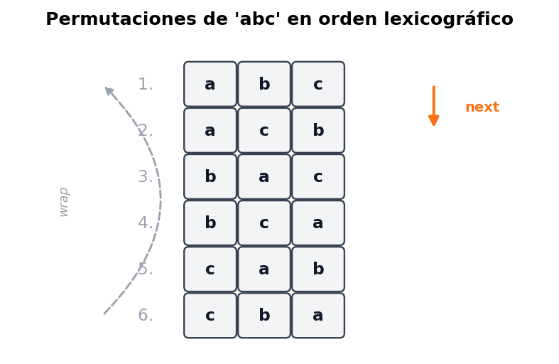
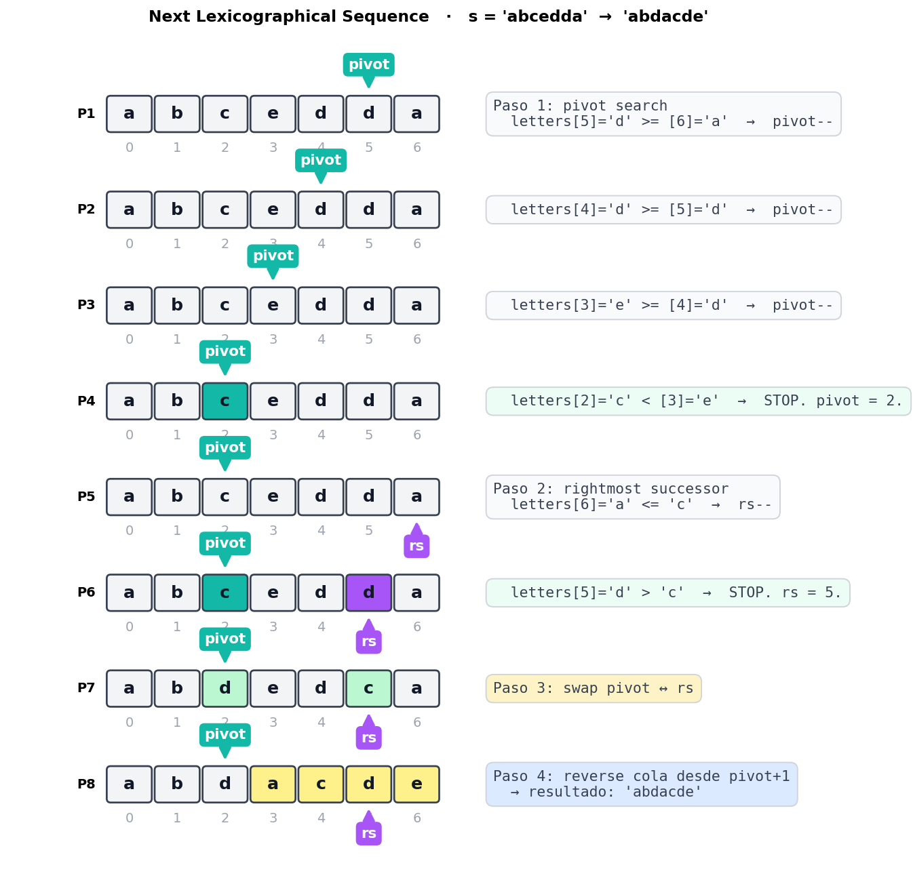
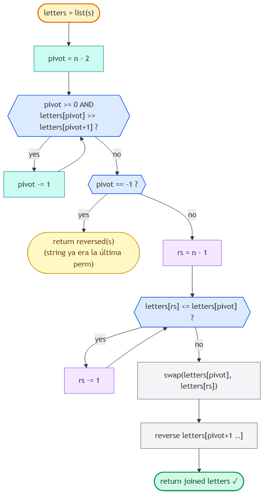

Next Lexicographical Sequence
📍 Two Pointers · Problema 6/6 · ⬅ Shift Zeros · 🏠 Chapter · Fin del capítulo · 📚 KB Index
TL;DR — Encontrar la siguiente permutación en orden lexicográfico de un string (o array). Algoritmo en 4 pasos: (1) buscar el pivot desde la derecha — primer carácter que rompe el orden no-creciente; (2) buscar el rightmost successor — primer carácter desde la derecha mayor al pivot; (3) swap pivot ↔ rightmost successor; (4) reverse la cola después del pivot. Si no hay pivot, el string ya es la última permutación → devolver la primera (reversa). O(n) tiempo, O(n) espacio (por la lista mutable).
📑 In this entry¶
- 🎓 For Dummies — empezá por acá
- Problema
- Qué significa “siguiente permutación lexicográfica”
- Insight 1: el cambio se hace lo más a la derecha posible
- Insight 2: la última permutación es non-increasing
- El algoritmo en 4 pasos
- Trace paso a paso
- Algorithm flowchart
- Implementación
- Por qué reverse y no sort
- Complexity Analysis
- Test Cases
- ⭐ Amplification: variantes y conexiones
- ⚠️ Pitfalls
- Interview Tips
🎓 For Dummies — empezá por acá¶
Analogía: imaginá las permutaciones de un string como las páginas de un diccionario. Si el string es "abc", las permutaciones ordenadas alfabéticamente son:
1. abc
2. acb
3. bac
4. bca
5. cab
6. cba ← última
Te dan una de esas permutaciones (digamos acb), y te piden que devuelvas la siguiente en el diccionario (bac). Si te dan la última (cba), volvés al principio (abc).
¿Cómo lo hacés sin generar todas las permutaciones? Hay un truco mecánico de 4 pasos. Pensalo así:
Tenés un odómetro de palabras (como el cuentakilómetros del auto, pero con letras). Para incrementarlo en 1, siempre mové la rueda más a la derecha que se pueda mover. Una rueda “se puede mover” si todavía no llegó al máximo de su tramo.
ej: abcedda → ¿cuál es el siguiente?
"ya están maximizados"
▼ ▼ ▼ ▼
a b c e d d a
▲
c es la rueda que sí se puede subir
(porque hay algo más grande a su derecha)
Los 4 pasos:
- Pivot: desde la derecha, encontrá el primer carácter que es menor que el siguiente. Ese es el “primer dígito que sí se puede subir”. En
abcedda, es lacen posición 2 (porquec < e). - Rightmost successor: desde la derecha, encontrá el primer carácter que sea mayor que el pivot. Ese es el “valor mínimo necesario para subir el pivot”. En
abcedda, es la primerad(la del medio, posición 5). - Swap: intercambiás pivot ↔ rightmost successor.
abcedda→abdedca. - Reverse: la cola después del pivot queda en orden no-creciente (eso es por construcción). Para que la nueva permutación sea la mínima posible después del swap, hay que revertir esa cola para que quede en orden creciente.
abdedca→abdacde.
Resultado: abcedda → abdacde.
¿Por qué funciona?¶
- El swap aumenta el valor del pivot lo mínimo posible (porque elegimos el successor más a la derecha que sea mayor).
- El reverse minimiza la cola después del nuevo pivot (porque la cola estaba non-increasing y revertirla la hace non-decreasing → la permutación más chica).
Resultado: la permutación inmediatamente siguiente. No te saltás ninguna, no devolvés una más grande de lo necesario.
Trampas comunes¶
- ⚠️ Confundir “non-increasing” con “decreasing”. Decreasing significa estrictamente
>. Non-increasing significa>=. La cola maximizada permite iguales adyacentes (ej:dda). Si usás>en el pivot search, fallás cuando hay duplicados. - ⚠️ Usar sort en vez de reverse en el paso 4. Sort funciona pero es O(n log n) extra. Como la cola ya es non-increasing, revertirla es O(n) y da el mismo resultado.
- ⚠️ No manejar el caso “ya es la última permutación”. Si todo el string es non-increasing, no hay pivot. La consigna dice: devolver la primera permutación (que es la string revertida).
¿Listo para la versión completa? ⬇️
Problema¶
Dado un string de letras inglesas en minúscula, reordená los caracteres para formar la siguiente permutación en orden lexicográfico (alfabético). Si el string ya es la última permutación posible, devolvé la primera (la mínima).
Ejemplos¶
Input: s = "abcd"
Output: "abdc"
Explicación: "abdc" es la siguiente permutación después de "abcd".
Input: s = "dcba"
Output: "abcd"
Explicación: "dcba" es la última permutación → volvemos a la primera.
Constraints¶
- El string tiene al menos un carácter.
- Solo letras inglesas en minúscula.
Qué significa “siguiente permutación lexicográfica”¶
Considerá todas las permutaciones de "abc" listadas en orden alfabético:

La siguiente permutación de "abc" es "acb". La de "acb" es "bac". Y así. Cuando llegás a "cba" (la última), la consigna pide volver al principio.
Puntos clave:
- La siguiente permutación es lexicográficamente mayor que la original.
- Es la menor entre las que son mayores.
- Usa exactamente las mismas letras (es una permutación, no una transformación arbitraria).
Insight 1: el cambio se hace lo más a la derecha posible¶
Para que la siguiente permutación sea lo más cercana posible a la original, el cambio debe involucrar caracteres lo más a la derecha posible.
Comparemos dos formas de “aumentar” abcde:
Cambio cerca de la derecha (preferible):
a b c d e → a b c e d (incremento chico)
Cambio cerca de la izquierda (peor):
a b c d e → b a c d e (incremento grande)
Ambos son mayores que abcde, pero el primero es más cercano. La intuición: cambiar caracteres a la izquierda da saltos enormes (todo lo que viene después puede ser cualquier cosa); cambiar a la derecha da el incremento mínimo.
Conclusión: rearrange solo los caracteres al final del string (la “cola” o “suffix”), si es posible. La pregunta ahora es: ¿cuán larga es esa cola?
Insight 2: la última permutación es non-increasing¶
Una observación clave: la última permutación de un conjunto de caracteres es siempre non-increasing.
Ejemplo: con las letras {a, b, c, c}, la última permutación posible es ccba (la “más grande” alfabéticamente). Esa cadena es non-increasing: c >= c >= b >= a.
ej: abcc → … → ccba ← última, non-increasing
Por qué importa esto: si la cola del string ya es non-increasing, no podemos rearrengarla para hacerla más grande: ya está al máximo. Hay que extender el “área de cambio” más a la izquierda hasta encontrar un carácter que sí se pueda subir. Ese carácter es el pivot.
Ejemplo: s = "abcedda"
posición: 0 1 2 3 4 5 6
caracteres: a b c e d d a
└────────┘
cola non-increasing (e d d a)
└─────────────┘
pero "e" rompe el orden? No, "e d d a" es non-increasing.
└────────────────┘
"c e d d a" ← acá "c < e" rompe el non-increasing.
'c' es el pivot.
El pivot es el primer carácter (desde la derecha) que rompe el orden non-increasing. Es el carácter que vamos a subir.
¿Y si no hay pivot?¶
Si recorrés todo el string desde la derecha y nunca encontrás un carácter menor que el siguiente, todo el string es non-increasing → es la última permutación. La consigna dice: devolver la primera, o sea revertir el string (la primera permutación de un conjunto de caracteres es non-decreasing).
ej: s = "dcba" → no hay pivot → reverse → "abcd"
El algoritmo en 4 pasos¶
Paso 1 — Localizar el pivot¶
Recorré desde la derecha (empezando en len-2, no len-1, porque comparás con el siguiente). Detenete en el primer índice donde s[pivot] < s[pivot+1].
let pivot = letters.length - 2;
while (pivot >= 0 && letters[pivot] >= letters[pivot + 1]) {
pivot--;
}
Si pivot == -1, no hubo pivot → string ya es la última permutación → devolver reverse(s).
Paso 2 — Encontrar el rightmost successor¶
El rightmost successor del pivot es el carácter más a la derecha que sea estrictamente mayor al pivot. Como la cola después del pivot es non-increasing, recorré desde la derecha y parate en el primer carácter mayor.
let rightmostSuccessor = letters.length - 1;
while (letters[rightmostSuccessor] <= letters[pivot]) {
rightmostSuccessor--;
}
Por qué “rightmost”: elegir el successor más a la derecha (el menor candidato válido) genera el incremento más chico posible para el pivot, que es lo que queremos.
Paso 3 — Swap¶
Intercambiá pivot y rightmost successor:
[letters[pivot], letters[rightmostSuccessor]] = [letters[rightmostSuccessor], letters[pivot]];
Después de esto, el carácter en la posición del pivot es mayor que antes, y la cola sigue siendo non-increasing (lo demostramos abajo).
Paso 4 — Reverse la cola¶
La cola después del pivot es non-increasing, lo cual significa que es la permutación más grande de esos caracteres. Para que la nueva permutación total sea la mínima posible mayor que la original, queremos que esa cola sea la más chica posible. La permutación más chica de un conjunto de caracteres es non-decreasing, que se obtiene revirtiendo la non-increasing actual.
// Reverse in-place desde pivot+1 hasta el final:
let l = pivot + 1, r = letters.length - 1;
while (l < r) {
[letters[l], letters[r]] = [letters[r], letters[l]];
l++; r--;
}
Reverse, no sort: la cola ya está non-increasing, así que
reversela convierte en non-decreasing en O(n). Sort haría lo mismo en O(n log n) — menos eficiente.
Trace paso a paso¶
Ejemplo: s = "abcedda". Esperamos "abdacde". Cada paso visualizado:

Resultado: "abdacde" ✓
Verificación: ¿es "abdacde" la siguiente permutación después de "abcedda"? Comparemos carácter a carácter:
a == ab == bd > c← acá se dispara el “mayor”
Como en la posición 2 ya pasamos a algo mayor, todas las strings con prefijo "abd..." son mayores que "abcedda". La menor de esas es la que tiene la cola más chica posible: "acde" (los caracteres restantes en orden ascendente). Eso es exactamente lo que generamos.
Algorithm flowchart¶

Implementación¶
JavaScript¶
function nextLexicographicalSequence(s) {
const letters = s.split('');
// Paso 1: localizar el pivot (primer char desde la derecha que rompe non-increasing).
let pivot = letters.length - 2;
while (pivot >= 0 && letters[pivot] >= letters[pivot + 1]) {
pivot--;
}
// Si no hay pivot, el string ya es la última permutación.
if (pivot === -1) {
return letters.reverse().join('');
}
// Paso 2: encontrar el rightmost successor del pivot.
let rs = letters.length - 1;
while (letters[rs] <= letters[pivot]) {
rs--;
}
// Paso 3: swap pivot y rightmost successor.
[letters[pivot], letters[rs]] = [letters[rs], letters[pivot]];
// Paso 4: reverse la cola para minimizarla.
let l = pivot + 1, r = letters.length - 1;
while (l < r) {
[letters[l], letters[r]] = [letters[r], letters[l]];
l++; r--;
}
return letters.join('');
}
C¶
public string NextLexicographicalSequence(string s) {
char[] letters = s.ToCharArray();
// Paso 1: localizar el pivot (primer char desde la derecha que rompe non-increasing).
int pivot = letters.Length - 2;
while (pivot >= 0 && letters[pivot] >= letters[pivot + 1]) {
pivot--;
}
// Si no hay pivot, el string ya es la última permutación.
if (pivot == -1) {
Array.Reverse(letters);
return new string(letters);
}
// Paso 2: encontrar el rightmost successor del pivot.
int rs = letters.Length - 1;
while (letters[rs] <= letters[pivot]) {
rs--;
}
// Paso 3: swap pivot y rightmost successor.
(letters[pivot], letters[rs]) = (letters[rs], letters[pivot]);
// Paso 4: reverse la cola para minimizarla.
Array.Reverse(letters, pivot + 1, letters.Length - pivot - 1);
return new string(letters);
}
Por qué reverse y no sort¶
Después del swap del paso 3, la cola sigue siendo non-increasing. Vamos a probarlo informalmente:
- Antes del swap, la cola era
c_{p+1}, c_{p+2}, ..., c_{n-1}conc_{p+1} >= c_{p+2} >= ... >= c_{n-1}. - El rightmost successor era
c_{rs}conc_{rs} > c_{pivot}yc_{rs+1} <= c_{pivot}. - Después del swap, en la posición
rsquedóc_{pivot}(el original). Comoc_{rs-1} >= c_{rs} > c_{pivot}, se mantienec_{rs-1} >= c_{pivot}. Yc_{pivot} >= c_{rs+1}por lo que vimos. - O sea, la cola sigue ordenada non-increasing.
Una secuencia non-increasing revertida queda non-decreasing — y la mínima permutación de ese set de caracteres es exactamente la non-decreasing.
Por eso reverse (O(n)) es suficiente. Usar sort es correcto pero innecesariamente costoso (O(n log n)).
Complexity Analysis¶
| Métrica | Valor | Por qué |
|---|---|---|
| Tiempo | O(n) | Tres pasadas en el peor caso: (1) buscar pivot, (2) buscar rightmost successor, (3) reverse. Cada una es ≤ n. Total: 3n = O(n). |
| Espacio | O(n) | En JavaScript y C# los strings son inmutables, así que tenemos que crear un array mutable de caracteres (s.split('') en JS, s.ToCharArray() en C#) que ocupa O(n). En lenguajes con buffers mutables (StringBuilder con índices, char[] en C nativo) se reduce a O(1) sobre el buffer original. |
Test Cases¶
| Input | Expected | Descripción |
|---|---|---|
"a" |
"a" |
Un solo carácter — trivialmente la última permutación → reverse de "a" = "a". |
"aaaa" |
"aaaa" |
Todos repetidos → no hay pivot → reverse de "aaaa" = "aaaa". |
"ab" |
"ba" |
Dos chars en orden asc → siguiente es desc. |
"ba" |
"ab" |
Última permutación → primera. |
"abcd" |
"abdc" |
Caso del enunciado. |
"dcba" |
"abcd" |
Última permutación → primera. |
"abcedda" |
"abdacde" |
Caso del trace de arriba. |
"ynitsed" |
"ynsdeit" |
Caso del original. |
"aab" |
"aba" |
Con duplicados — el algoritmo respeta. |
"abdc" |
"acbd" |
Pivot interno. |
"abc" |
"acb" |
Caso simple. |
⭐ Amplification: variantes y conexiones¶
Variante 1: Next Permutation sobre array de números (LeetCode #31)¶
Mismo algoritmo, mismo código (cambiando letters por nums). De hecho, esto es lo que pide LeetCode #31:
Input: nums = [1, 2, 3]
Output: [1, 3, 2]
Input: nums = [3, 2, 1]
Output: [1, 2, 3]
Input: nums = [1, 1, 5]
Output: [1, 5, 1]
Variante 2: Previous Permutation (la inversa)¶
“Devolvé la permutación anterior.”
Mismo esqueleto pero invertido:
- Pivot: primer carácter desde la derecha que es mayor que el siguiente (rompe non-decreasing).
- Rightmost predecessor: primer carácter desde la derecha que es menor que el pivot.
- Swap.
- Reverse la cola (que ahora era non-decreasing) para hacerla non-increasing (la máxima posible).
Variante 3: k-th Permutation Sequence (LeetCode #60)¶
“Dada una colección [1, 2, ..., n], devolvé la k-ésima permutación.”
Acá no usás next-permutation iterativo (sería O(k×n), inviable para k grande). Se calcula directamente con factoriales: la primera posición se determina con (k-1) / (n-1)!, la segunda con (k-1) % (n-1)! / (n-2)!, etc.
Variante 4: Permutations (todas) (LeetCode #46)¶
Para generar todas las permutaciones de un array, hay dos approaches estándar:
- Backtracking (DFS con swap). O(n × n!).
- Iterativo con next-permutation: ordená el array, después llamá
nextLexicographicalSequencerepetidamente hasta volver a la inicial. O(n × n!).
Conexión con built-ins de otros lenguajes¶
- C++ STL tiene
std::next_permutationbuilt-in que implementa exactamente este algoritmo. Devuelvefalsesi la entrada ya era la última permutación. - JavaScript y C# no tienen built-in nativo, pero el algoritmo es lo suficientemente corto (≈15 líneas) como para tipearlo de memoria en una entrevista. Confirmar siempre con el entrevistador si está permitido escribir el helper.
Por qué este algoritmo es elegante¶
Es un caso emblemático de staged traversal:
- Stage 1: un puntero busca el pivot (recorre desde la derecha).
- Stage 2: otro puntero busca el rightmost successor (también desde la derecha).
- Después: swap + reverse, ambos en O(n).
Tres “pasadas” simples, cada una con un objetivo claro. La belleza está en descubrir la estructura (pivot + cola maximizada), no en ningún truco oscuro.
⚠️ Pitfalls¶
- Confundir non-increasing (≥) con decreasing (>). El pivot search usa
>=, no>. Con>fallás en strings con duplicados adyacentes (ej:"abdd"daría pivot = -1 incorrectamente porque'd' > 'd'es false). - Usar
<en vez de<=en el rightmost successor. El successor debe ser estrictamente mayor al pivot. La condición de loop esletters[rs] <= letters[pivot](skip while less-or-equal), o equivalentementeletters[rs] > letters[pivot](stop when greater). - Usar sort en vez de reverse en el paso 4. Funciona pero desperdicia O(n log n).
- No manejar el caso pivot == -1. El loop while puede dejar pivot en
-1si toda la string es non-increasing. Hay que checkear y devolver el reverse. - Hacer reverse de toda la string en vez de solo la cola. En JS
letters.reverse()revierte TODO el array — para revertir solo[pivot+1 .. end]usá un loop de two pointers manual oletters.splice(pivot+1).reverse().forEach(...). En C# usáArray.Reverse(letters, pivot + 1, length - pivot - 1)que toma offset + count. - Iniciar el pivot search en
len-1. Tiene que serlen-2porque comparás conpivot+1. Si arrancás enlen-1, el primer acceso esletters[len]→ IndexError. - Pensar que el string original tiene que estar ordenado. No: la entrada es cualquier permutación. El algoritmo funciona desde cualquier estado del “odómetro”.
Interview Tips¶
Tip 1 — Sé preciso con el lenguaje técnico. Decí “non-increasing” o “non-decreasing”, no “decreasing” o “increasing”. Las versiones estrictas no permiten iguales adyacentes; las non-* sí. Con duplicados, esa diferencia define si el algoritmo funciona o no.
Tip 2 — Dibujá el odómetro. Es un problema visual. Mostrar el patrón “la cola está maximizada como un odómetro a 999, hay que subir el dígito anterior” hace que la lógica clickee enseguida.
Tip 3 — Razoná el “por qué” de cada paso.
- Pivot: el primer dígito que se puede subir.
- Rightmost successor: el incremento mínimo posible.
- Reverse: minimizar la cola para que la nueva permutación sea la mínima.
Si solo memorizás los pasos sin entender el por qué, en cualquier follow-up te trabás. Si entendés la lógica, derivás el algoritmo en lugar de recordarlo.
Tip 4 — Aclará el formato de input/output.
- ¿String o array de chars? (Cambia las primitivas —
stringes inmutable en JS y C#; necesitás convertir achar[]para mutar.) - ¿Devolver nuevo string o modificar in-place? (LeetCode #31 pide in-place sobre el array.)
- ¿Solo letras minúsculas? ¿Hay restricciones en los caracteres?
Tip 5 — Sabela en frío: O(n).
Tres pasadas lineales, cada una a lo sumo n. No hay sort ocultos ni nada que la haga O(n log n).
Tip 6 — Si te piden generar todas las permutaciones, NO uses next-permutation iterativo. Es O(n!) llamadas × O(n) cada una = O(n × n!), pero la constante es alta. Para “todas las permutaciones”, backtracking puro es más limpio. Next-permutation brilla cuando querés la siguiente (o iterar una a la vez con poco espacio extra).
References¶
- LeetCode — #31 Next Permutation (versión sobre arrays)
- LeetCode — #46 Permutations
- LeetCode — #60 Permutation Sequence
- C++ STL —
std::next_permutation - Coding Interview Patterns — capítulo “Two Pointers” → “Next Lexicographical Sequence”
- Entradas relacionadas:
- Introduction to Two Pointers (la única strategy “staged” del capítulo)
📍 Two Pointers · Problema 6/6 — Fin del capítulo · ⬅ Shift Zeros · 🏠 Chapter · 📚 KB Index
🎯 Próximos capítulos del libro: Hash Maps and Sets · Linked Lists · Fast and Slow Pointers (variante de two pointers)